讓我們一起享用美食兼顧環境永續
環境友善海鮮首選
看看新漁獲環境友善海鮮首選
看看新漁獲365天
全年無休

+120種
新鮮魚貨
+50位
合作夥伴
24h
快速到貨
我們正處於海洋資源與海洋生物多樣性快速地衰退的窘境，為了達成人類魚類資源利用及生態永續並重願景，我們網羅了全台對海洋資源永續友善之家計型漁業及小規模漁業好手，積少成多積沙成塔，並遵循我國海鮮指南建議使用為原則，與國人共享每日臺灣在地生產海鮮
為了確保我國國民每個世代皆可享有台灣豐富海鮮資源，我們依循SDGs目標2、目標14，期望能透過網羅我國環境友善漁業捕獲之魚貨，分享給我國國人，人人在享用美味海鮮同時，兼顧海洋生態資源永續、並減少混獲造成之資源浪費。
我們將從您的每筆消費中提取2%金額，定期捐助我國環境團體組織，協助環境生態保育及復育
我們將持續號召具有相同理念之家計型漁業及使用環境友善魚具漁民一同加入優質水產品供應商，逐步穩定我們的供貨量
我們公司冷藏地點遍布全台漁港，合作夥伴捕獲之魚貨經機器辨識新鮮度度，隨即以-30度冷藏技術保鮮，讓您的商品就像現捕一樣